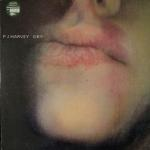
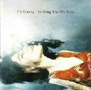
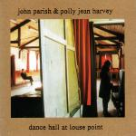
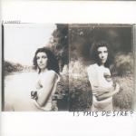
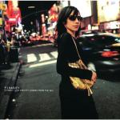
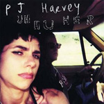
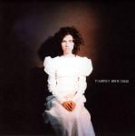
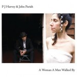
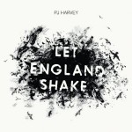

The No Ripcord Guide to... PJ Harvey
The only performer to win the coveted Mercury Music Prize on more than one occasion, PJ Harvey pulls off that rarest of tricks by managing to combine challenging and inventive art with mainstream success. Her most recent album, Let England Shake, was near-universally adored and made her more talked about than arguably she's ever been before, but what of her other albums? The West Country girl has been putting out material for two decades now and between us here at No Ripcord, we've compiled the definitive guide to help you dig deeper into a back catalogue that's bursting at the seams with riches.
Dry - 1992
Back in 1992, major record labels subscribed to the image of grunge as a sign of defiance and individuality. So while they invested in plenty of guitar-strumming chicks acting tough, little did UK label Island Records knew that the 22 year old art student they had just acquired was actually the real deal. It’s been a remarkable run for Harvey, who’s flawlessly morphed into different guises with a full tank of confidence. All of which makes it all the more pleasurable to revisit Dry two decades after its release, and it still holds up as a brash, defiant slice of feminist empowerment that portrays Harvey at her most unrefined. Having been inculcated to blues at a very early age, she took that influence and twisted it into a juddering, roaring monster of a record married with thick chords and woolly distortion. Debut records seldom arrive with this much poise. Juan Edgardo Rodriguez
Rid Of Me - 1993
I doubt many people have seen the cover to Rid Of Me and not been stricken with awe at what the record might sound like. This is Harvey at her most unhinged and raw, right from the unforgettable climax of the opening title track – “Lick my legs / I’m on fire / Lick my legs / Of desire”. This ‘Lady Lazarus’-esque feminist empowerment is excessive yet convincing on lead single, 50ft Queenie. It contains her first really avant-garde moment in the 11/4 panicking strings of Man Size Sextet and, as if to yank a songwriting baton from the hands of Bob Dylan, she covers Highway '61 Revisited with an urgency and tension that totally makes it her own. It was with Rid Of Me that Harvey truly proved her genius, even when creating something uncontrollable and frenzied with aggression. Stephen Wragg
4-Track Demos - 1993
4-Track Demos appeared between the release of Rid Of Me and work starting on To Bring You My Love. It contained eight tracks that had appeared on Rid Of Me plus six more previously unreleased. The idea was apparently that of Steve Albini, who loved the demos so much he convinced Harvey that they deserved a release of their own. Many commentators preferred the demo versions, claiming that Albini’s trademark production swamped Harvey’s vocal range and guitar work in volume and excessive dynamics. What 4-Track Demos highlights is that Rid Of Me is too long by two or three songs. The Demos versions are, as you would expect, a raw and challenging listen; and the unreleased tracks are easily the equal to those on Rid Of Me. 4-Track Demos is not her greatest or definitive album, but it remains the most direct expression of Harvey’s art. David Wood
To Bring You My Love - 1995
PJ Harvey’s To Bring You My Love signalled a transition in her artistic development, namely the break-up of her trio and the beginning of a fruitful creative relationship with producer Flood and musician John Parish. The album itself is forged out of blues lust and longing, its title track a repetitious kerrang of guitar riff, Harvey exuding a powerful mix of frustrated desperation. Perhaps unintentionally built out of the historical significance of American blues and its reinvention via the hands of British rock musicians, To Bring You My Love was enlivened by Harvey’s moves toward vulnerability (C’mon Billy, Teclo, Down By The Water), but not at the expense of the energy that brought her notoriety in the first place with Dry and Rid Of Me (Meet Ze Monsta, Long Snake Moan). At a time when ‘alternative’ was growing passé, Harvey’s To Bring You My Love was smartly reliant on more than squealing guitars and sexualized venom. Sean Caldwell
Dance Hall At Louse Point (with John Parish) - 1996
In many ways, this was PJ Harvey’s invisible album. In the UK, only one radio presenter would regularly play songs from this record, and that was her stalwart friend and supporter, John Peel. Even then, despite his indefatigable support, Dance Hall At Louse Point divided Harvey’s fan base – this was after all, strictly speaking, no PJ Harvey album in the traditional sense. Harvey herself would later cite the album as an “enormous turning point” and one she regarded it as a “test” to her lyric writing. “Take me one more time,” pleads Harvey, repeatedly, in the final moments of the album, something her fan base did with further offerings. Interestingly, if this album’s louder aspects got something out of her system, the result was to steer her next long player, Is This Desire?, an all-together more subdued affair, to critical success. Gavin Fearnley
Is This Desire? - 1998
Is This Desire? is the forgotten child of Harvey’s body of work, often overshadowed by showier or more immediate, award-winning albums. This is unfair, as it’s a quieter, more subtle affair, containing a number of songs that rank among her best, as well as a more expansive musical palette taking on more keyboard and electronic sounds. After the psycho-sexual blues of To Bring You My Love, Harvey retreated to a less personal storytelling style, often writing in the third person. The result was an atmospheric set of songs with particular highlights being opener Angelene, the spooky whispering of The Wind, single A Perfect Day Elise, The River (inspired by a Flannery O’Connor short story) and the fragile, haunting title track. David Wood
Stories From The City, Stories From The Sea - 2000
An album about lost love, lust and cities. The album is as influenced by New York as it is by Patti Smith’s best moments (why else are horses mentioned throughout?) with Good Fortune, This Mess We’re In and You Said Something all centering painful stories around the Big Apple. And while the songs are of a solidly melancholic subject, there’s no hint of self-pity; it’s the opposite. Miss Polly Jean romps through the album; Kamikaze is the sexiest break up song going and This Is Love is the female Whole Lotta Love. With its riffs and lust, what’s not to love? Obviously an album with diverse musicianship (We Float sounds like a lost child of the Bristol sound, Beautiful Feeling is White Chalk with guitars) and blatant appeal failed in the charts despite its rightful Mercury award. I never understood why it never went ballistic. James McKenna
Uh Huh Her - 2004
Harvey works best on the margins and, perhaps recognising this herself, made Uh Huh Her a much more primal and scratchy album than its award-winning predecessor. Whereas Stories From The City… had hooks and melodies, Uh Huh Her, from its unfussy cover photo downwards, had jagged edges and listener-wrongfooting turns of pace. This doesn’t mean any less attention has been paid to the lyrics though, with the extraordinarily detailed and impassioned The Letter a particular highlight. Harvey also shows her vulnerable side too, with The Pocket Knife featuring a pleading, fragile vocal over barely there instrumentation. Uh Huh Her is unlikely to be anyone’s favourite album in the PJ Harvey canon, yet it remains, as always, a fascinating snapshot of one of the generation’s most enduring and interesting artists. Joe Rivers
White Chalk - 2007
Following the relatively muted response that met Uh Huh Her, it was necessary for Harvey to shake things up. What's surprising though is how she drastically she went about it - not just opting to tone the rock-stylings down, but ditching the guitars completely, learning the piano from scratch and working outside her normal vocal range in search of new inspiration. What really sets it apart in her discography though is its sense of vulnerability; before she was often confrontational, here she laid herself, and her sense of womanhood, almost completely, devastatingly bare, as in the spectacularly creepy lead single When Under Ether, and even the virginal/bridal look she adopted for the album's cover and promotion. It's not perfect; the appropriately titled Broken Harp strays a little too far into discomfort and there's a slight sense of anti-climax; and perhaps in an album so short any minor flaws are less forgivable; but it still might be one of her most unique and startling works. Mark Davison
A Woman A Man Walked By (with John Parish) - 2009
In retrospect one can consider this album as being the centrepiece in a loose trilogy between White Chalk and Let England Shake. All three albums are marked by arrangements and instrumentation heavily influenced by folk-rock, especially the English variant. For this album Parish wrote all the music, Harvey all the lyrics. Freed from the confines of her own compositions Harvey seems to revel in exploring a range of characters and voices. This multiplicity gives the album a slightly disjointed feel, lacking the intense focus of her solo-billed efforts. It has its moments though: Sixteen, Fifteen, Fourteen sounds like a distant cousin to Zeppelin’s Four Sticks, while on the title track Harvey hasn’t sounded as crazy since Who the Fuck? David Wood
Let England Shake - 2011
Let England Shake was a drastic turn of the pen for PJ Harvey. Always capable of powerful lyrics, it was on this album that she relentlessly confronted major issues, writing lyrics before music and becoming unapologetically political. Harvey’s effortlessly gut-wrenching imagery, such as the deadpan, “Soldiers fell like lumps of meat”, were foregrounded by her new, narrator-like vocal style, and by her beautiful expansion on White Chalk’s sparse piano arrangements. No longer striving to make our blood curdle like she did for so many years, Harvey is confident and controlled; and her reassurance and clear, coherent concept make her music as powerful as ever. Nothing short of an ambitious, late-age masterpiece, Let England Shake is, from the haunting melodies to the timeless — and time-jumping — subject matter, both an essential PJ Harvey album and arguably the first seminal war album. Forrest Cardamenis
That's our take on a varied career, now how about yours? Any PJ Harvey highlights you'd like to point us and the readers towards? We'd love to hear your thoughts in the Disqus form below.
26 July, 2012 - 13:16 — No Ripcord Staff